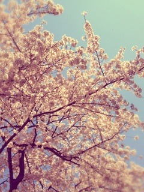
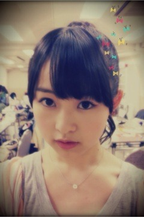

| 2012/04 10 Tue | 112回目*marika |
いつも読んでくださってる方、
初めて読んでくださった方、
コメントしてくださった方
ありがとうございます＊
いやーぽかぽかやったね

春がきたあああああぁぁぁ

春の風、春の香り

桜もきれい。
花いっぱい咲いててきれい。
お花見したいな

みなさんとお花見したいけど、、
できないから今一緒にお花見しましょっ


満開

きれいーーーーー
メンバーもブログで桜の写真いっぱい載せてるけど、
やっぱりきれいだから撮りたくなるわよね
 ＊
＊
＊
今週はOFFの日が多いです。
新学期も始まったので
...クラスに馴染もう

さっ、学校学校‼
さっ、質問回答質問回答‼
...............
まりちゃんは通学用に
どんなバッグ使ってるの ？
 イーストボーイの合皮黒のスクールバッグ♪♪
イーストボーイの合皮黒のスクールバッグ♪♪
ストラップ一個‼
シンプル派

べびたんの好きな食べ物何ですか？
はい、最近はいちごです

一つに絞れないからはまってるものにしました
 ぴよぴよ
ぴよぴよ
ぴよぴよ
あっ、報告

苦手の生のトマトとアボガドを
自ら食べるようになりました‼
おいしさがわかった:D
成長したでしょ⁇ほめてほめて←←
どうしたら、ベビたんみたいに、
ファッションセンスが、良くなりますかね？
うぁぁありがとうです‼
自分がすきって思うものは
着てみるのがいちばんです

ベビたんを応援するなら、
どのポジションが、一番良いですか？
(上手側・下手側・中央)
私には応援してくださるのが
わかるから、どこでも良いです○
ありがとうっ
 ))
))
))
釣りキャラ目指してる笑？
たまにそういう節があるのでね
...え
 目指し......⁉
目指し......⁉
キャラではないよ

ＤＤだけどべびたん推してもいい？(笑)
ありがとう
もっともっとすきになってもらえるように
めっちゃ努力します。
なんかどんどんベビーになってる気がする 笑
なんせ乃木坂一のベビーフェイスですから
 うふん
うふん
...これ以上ベビーになったらやばいね
 ぁ
ぁ
ぁ
これから、演技派を目指しますか？
いろいろなことに挑戦したいです‼
ファッション雑誌にも出たいです:)
つっぱしるっっ

実はベビたんのあたまなでなでしたーい！
と思ってたりwうずうずw
メンバーにあたまなでられたりとかする？
なでなでですか


まいまいとかななみとかさゆりんになでなでされる><
というかあごこしょこしょされる

今日中学卒業式でした**
私も高校生になるなんて
信じられません(・・;)
ベビ先輩からのアドバイスありますか??
卒業おめでとうのことば
言えなくてごめんなさい><
私は中学生の時よりちょっと落ち着いたかな⁇
とふと思いました:)
新しい環境は不安だったけど、
慣れてくると楽しい

高1はとにかく楽しんで‼＊
僕をベビたんの弟にしてくれませんか(>★
わおっっ

じゃあ私がおねーちゃんだっっ‼
頭なでなで
 ←
←
←
コメ遅い人は嫌いですか(；´Д｀)？
そんなことないですっ

読んでくださるだけでもうれしいから。
でも、毎回コメントしてくださる方の名前がないと、
「あれ？」て思っちゃう><
忙しいのにコメントありがとうございます‼
俺にあだ名つけてください
俺だけから呼んで欲しい呼び方は？？
はーいっ

にぎにぎの時に話しましょっ^^ひひ
ベビたんの家の中の宝物はなんですか(゜ロ゜)?
みなさんからのお手紙やプレゼント。
観葉植物。
...いっぱい‼
というか家にあるものは全部宝物です
べひたんって何かお気にの香水ってある？
とくにないです
あんまりつけない人。
パパさんがお土産でくれた
ちっちゃいボトル3つの香水。
まだ一回しかつけたことないけど、
良い香りです

大人になったらつけたいな。
まりちゃんは
北海道好きー？＞＜
なまらすきよーーーーー

神奈川県の海老名市ってわかりますか?
わかりますっ

ここまで

...............

名古屋の個握のときの

ちょうちょ飛んできて
頭にとまって
リボンになりました。
おやすみなさい
まりか
コメント(133)
2012/04/10 00:30